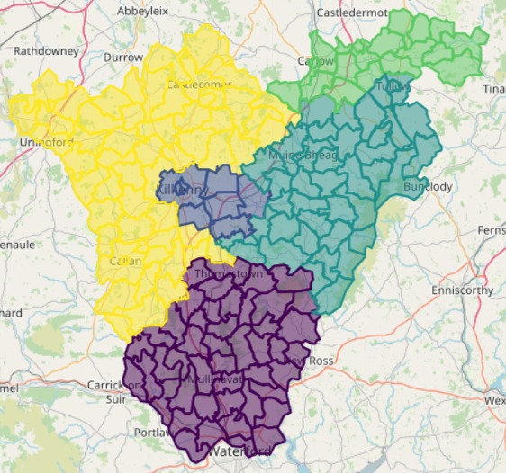

Hosted by:


We have developed an algorithm for electoral redistricting in Ireland based on a physics model used in statistical physics called the Potts model. Constitutional objectives are encoded into an "energy" description, and numerical techniques known as Markov Chain Monte Carlo methods are used to find optimal electoral boundary configurations.
This method processes in hours what takes months by hand, and can explore vastly more boundary configurations than a human could. The result is a transparent algorithm that offers quantifiable, consistent, and auditable application of constitutional and legal objectives with any potential for gerrymandering eliminated by design.
Hosted by: